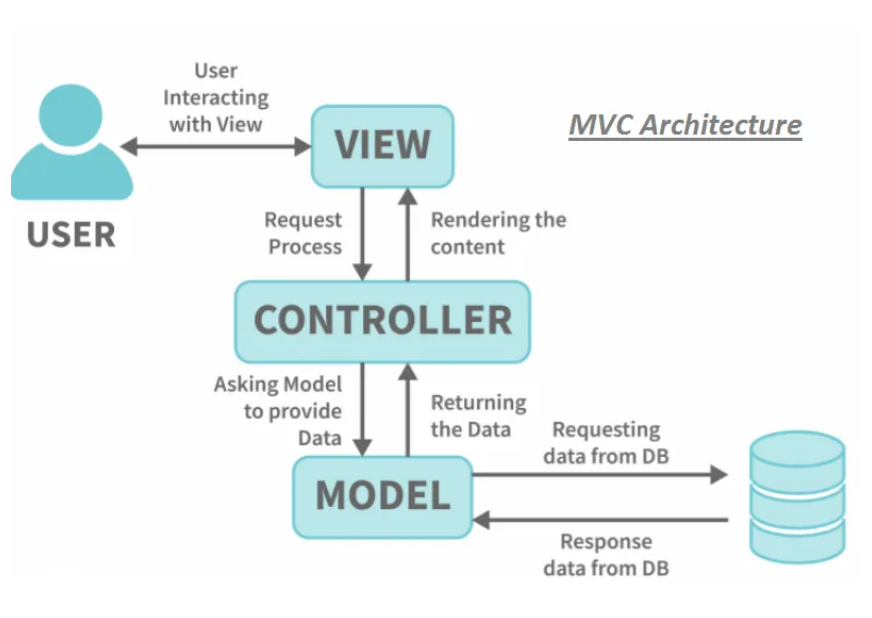

1. Sintaxis y Operadores PHP
// Operadores de comparación e identidad
$valor = 10;
if ($valor === "10") { // False por tipo }
?>
1.1 Operadores Aritméticos
| Signo | Operación | Ejemplo | Resultado | Nota |
|---|---|---|---|---|
| + | Suma | 5 + 5 |
10 | No concatena. |
| - | Resta | 10 - 4 |
6 | - |
| * | Multiplicación | 2 * 3 |
6 | Uso de asterisco. |
| / | División | 10 / 2 |
5 | Ojo con / 0 (Error). |
| % | Módulo | 10 % 3 |
1 | Resto de la división. |
| ** | Exponenciación | 2 ** 3 |
8 | 2 elevado a la 3. |
1.3 Tabla de Verdad (Operadores Lógicos)
| Operador | Valor A | Valor B | Resultado |
|---|---|---|---|
| AND (&&) | True | True | True |
| AND (&&) | True | False | False |
| AND (&&) | False | False | False |
| OR (||) | True | False | True |
| OR (||) | False | False | False |
| NOT (!) | True | N/A | False |
| NOT (!) | False | N/A | True |
2. Patrón Modelo-Vista-Controlador
3. Glosario de Ingeniería Web
Conceptos clave acumulados para el desarrollo de aplicaciones profesionales.
AJAX (Asynchronous JavaScript and XML)
Técnica que permite actualizar partes de una página web sin recargarla por completo, mejorando la experiencia del usuario y la eficiencia del servidor.
API & JSON
La API es el contrato de comunicación entre sistemas. JSON es el formato de texto ligero y universal que transporta los datos en esas comunicaciones.
DRY (Don't Repeat Yourself)
Principio fundamental de programación que busca reducir la duplicación. Cada pieza de lógica debe tener una representación única en el sistema.
CLEAN CODE
Escribir código legible y fácil de mantener. Prioriza nombres
descriptivos para variables y funciones (ej:
$usuarioActivo en lugar de $u).
CRUD (Persistencia de Datos)
Acrónimo que define las operaciones fundamentales en cualquier sistema que gestione datos persistentes:
| Letra | Acción | Sentencia SQL |
|---|---|---|
| C | Create (Crear) | INSERT INTO... |
| R | Read (Leer) | SELECT * FROM... |
| U | Update (Actualizar) | UPDATE... SET... |
| D | Delete (Borrar) | DELETE FROM... |
STATELESS & MIDDLEWARE
Stateless significa que el servidor no guarda estado entre peticiones. El Middleware es una capa lógica que filtra o procesa peticiones antes de llegar al controlador.
BUENAS PRÁCTICAS
Estándares de calidad indispensables para un entorno profesional:
- Indentación Coherente: Facilita la lectura visual de la estructura del código.
- Comentarios de Propósito: Explicar el "por qué" de una lógica compleja, no el "qué" (que debería ser obvio por el código).
- Validación de Inputs: Filtrar siempre los datos del usuario para prevenir inyecciones de código y asegurar la integridad.